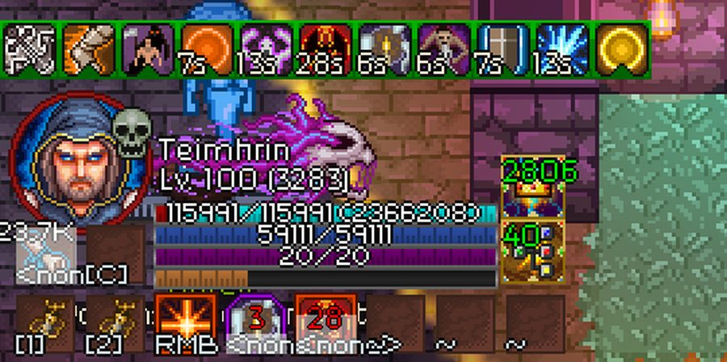
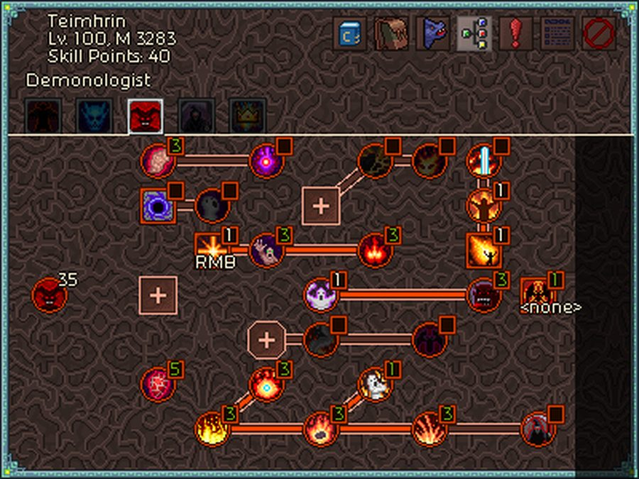
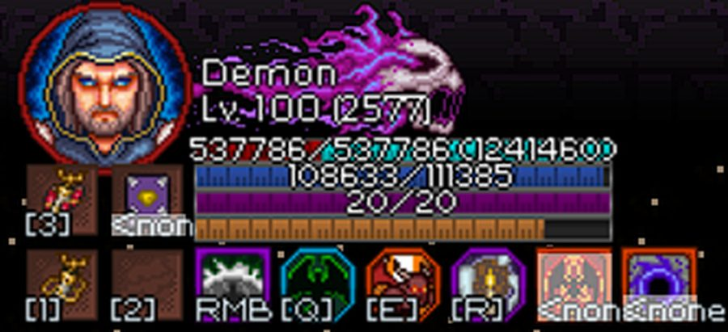
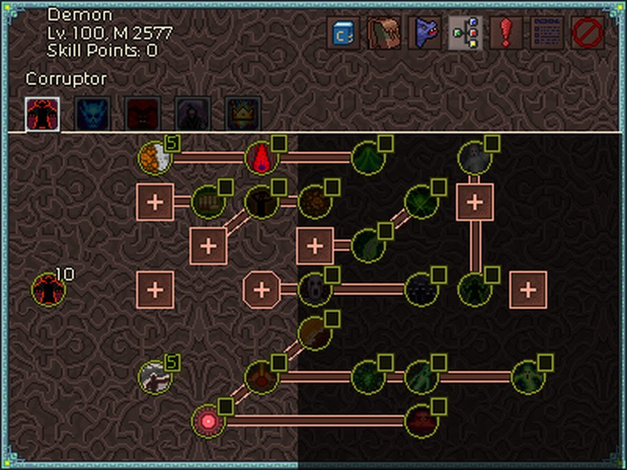
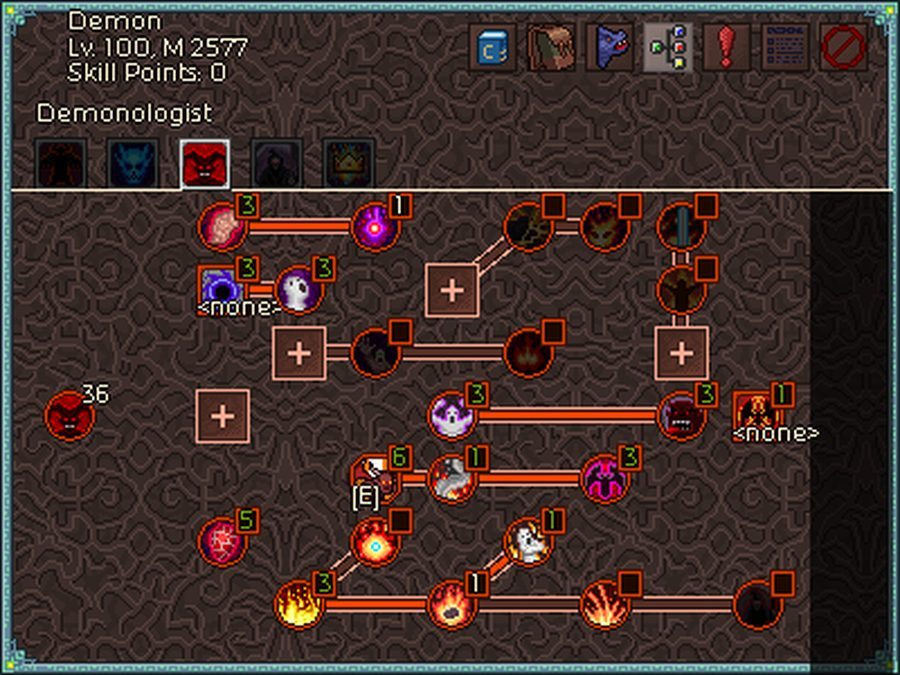
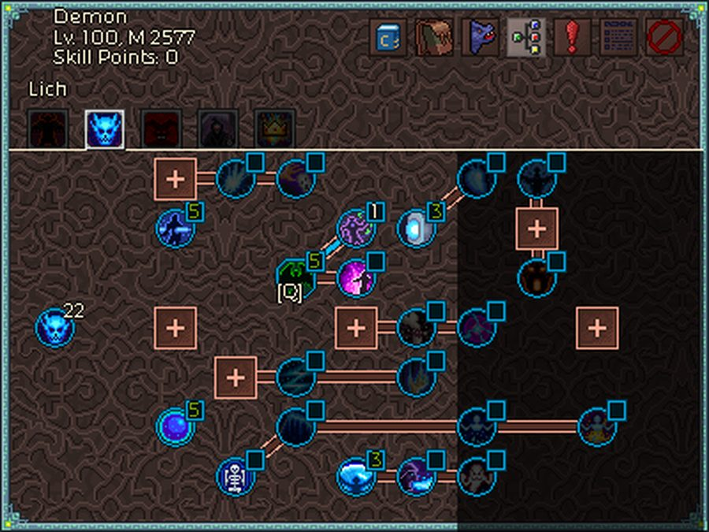
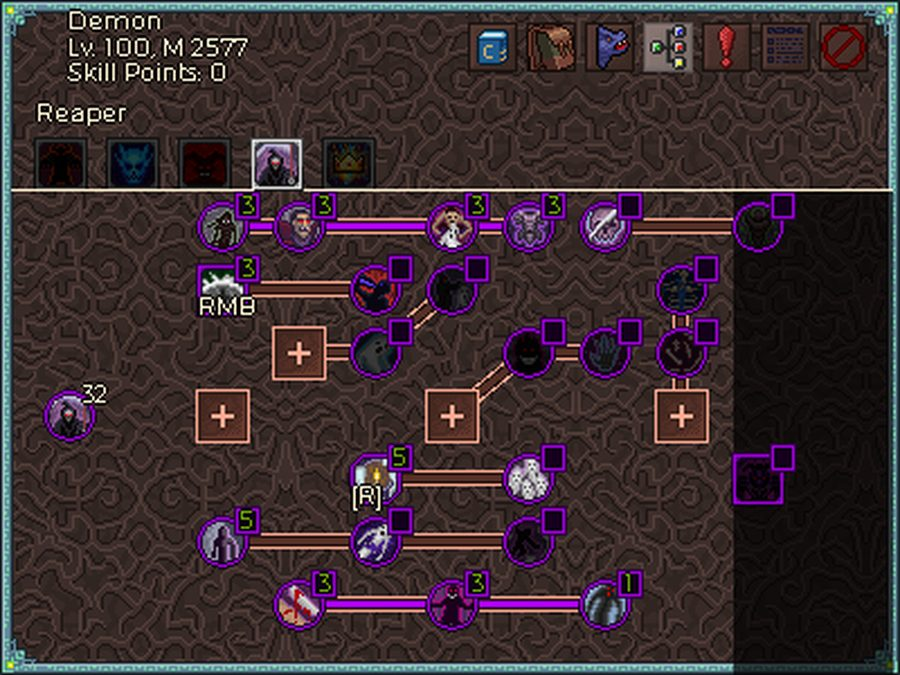

공식 디스코드 #build-forum에 올라온 워록 엔드게임 빌드 5종을 한국어로 정리했습니다.
검색 결과가 없습니다.
| 빌드 | 원소 | 성격 | DLC | 도달 티어 | 자료 상태 |
|---|---|---|---|---|---|
| 저주 모독자 Curse Spell Desecrator |
독암흑 | 푸시. 무리를 끌고 다니다 한 번에 폭사 | 필요 | T1000+ (권장 마스터리 1000+) | 상 — PDF 전문 10쪽 확보. 저자 설명까지 원문 그대로 |
| 메테오라 Meteora Warlock |
화염냉기 | 속도 파밍. 순간이동 연타 + 오토캐스트 | 필요 (하드코어 기록) | 영상 T500 · 저자는 T700+ 가능하다고 서술 | 상 — imgur 앨범 14장 + 저자 주석. 장비·룬·마스터리는 완전, 트리 세부 배분은 공백 |
| 데몬 로드 Demon Lord T500 |
화염소환 | 초보 친화. 산책 시뮬레이터 | 권장 (필수 아님) | T500 | 중 — imgur 앨범 23장. 장비·아티팩트는 완전하지만 스킬 이름·젬·딜사이클은 원본 해상도 한계로 공백 |
| 태양과 달 화염 태풍 Sun & Moon Firestorm |
화염냉기 | 화염 태풍 연타 + 순간이동 | 필요 | T700+ (목표 신화 XV) | 상 — 텍스트 가이드 전문. 4종 중 유일하게 젬·딜사이클·방어 수치까지 있음 |
원저자 TMaz94 · 공식 디스코드 #build-forum 스레드 «Curse Spell Desecrator» 첨부 Curse-Spell-Desecrator.pdf (2022-07-14, 10쪽) · 고대 야수 Ancient Beasts DLC 필요 · 권장 최소 마스터리 1000 · T900 시연 영상 커뮤니티
여기에 신성 모독 Desecration 층(모독자 세트 + 타고난 확률의 왕관 + 비명 해골의 약화 중첩)이 곱연산으로 얹힙니다.
피해를 무시한다면서 보석은 암흑 피해 +46%가 7개, 인챈트는 원소형 적 대상 피해 +35%가 4부위입니다. 모순처럼 보이지만 세탁 파이프라인입니다.
| 단계 | 출처 | 하는 일 |
|---|---|---|
| 1 | 원소술사의 축복 Elementalist's Boon (별 아티팩트) | 「원소형 적 대상 피해」 수치의 250%를 모든 원소 피해 스탯에 더합니다. 대신 원소형 적에게 추가 피해를 주지 못하게 됩니다 |
| 2 | 하나를 위한 모두 (2) All For One | 모든 보너스 원소 피해 스탯을 1번 스킬 슬롯에 놓인 스킬의 원소로 몰아줍니다 |
| 3 | 1번 슬롯 = 고통 결계 고리 (독) | 그래서 암흑 보석도, 원소형 적 피해 인챈트도 전부 독 피해가 됩니다 |
제압·치피 같은 흔한 주 스탯을 이 빌드가 안 쓰기 때문에, 그 인챈트 슬롯이 전부 원소형 적 대상 피해로 비워집니다. 그게 이 조합이 성립하는 이유입니다.
| 슬롯 | 스킬 | 키 | 실제 시전? |
|---|---|---|---|
| 1 | 고통 결계 고리 Affliction (부패자) | 없음 + 자동 시전 ON |
예 — 자동. 반드시 1번 슬롯(하나를 위한 모두 조건). 자동 시전이 아니면 쿨다운이 없는 비명 해골에 막혀 왼쪽 스킬이 아예 안 나갑니다 |
| 2 | 비명 지르는 사령의 해골 Screaming Skull (수확자) | 좌클릭 | 예 — 신성 모독 약화 중첩 엔진 |
| 3 | 흑사병 독안개 Plague (부패자) | 좌클릭 | 예 — 도트 공급 |
| 4 | 골격 돌출창 옭아매기 Bone Spears (수확자) | 좌클릭 | 예 — 몹몰이 겸 게으른 운영용. 최적화 대안: 여기에 비탄의 늪을 넣고 몹몰이는 번개 와이번으로 |
| 5 | 파멸의 비술 제단 의식 Ritual of Banes | — | 장착만 — 피해 감소 오라 (의식 스킬은 슬롯에 두기만 해도 작동) |
| 6 | 저주 아무거나 Woe / Terror / Reckoning | — | 장착만 — 죽음의 속박이 셋 다 자동 시전 |
슬롯 2~4가 전부 좌클릭입니다. 크로니콘은 여러 스킬을 한 버튼에 겹칠 수 있고, 쿨다운이 허락하는 대로 슬롯 순서로 발동합니다.
| 벨트 | 내용 |
|---|---|
우클릭 | 영혼 전송 왜곡 스크롤 Scroll of Soul Warp ×999 — 맵 횡단용 |
스페이스 | 번개 와이번 서책 Codex of Lightning Wyrms — 5랭크 시전, 쿨 3초 |
1 · 2 | 비워둠 |
| 트리 | 투자 | 내용 |
|---|---|---|
| 부패자 Corruptor | 30 | 흑사병 5(최대) · 고통 결계 고리 1 · 역병 창궐 Outbreak 3(최대) + 고통 결계 고리에 도달하기 위한 경유 패시브 약 21 (전제 조건이 29포인트) |
| 리치 Lich | 1 | 심연의 지각 마력 Deep Pools 1개만. 정확히 1개 — 2개째부터는 메건의 불꽃으로 남겨두는 쪽이 이득 |
| 수확자 Reaper | 25 | 비명 해골 5(최대) · 골격 돌출창 1 · 파멸의 비술 5(의식석 덕에 화면엔 6랭크로 표시) · 저주 1종 1 + 즉사 돌연사 Sudden Death · 신성 모독 등 패시브 |
| 악마학자 Demonologist | 0 | 전혀 찍지 않습니다. 마스터리가 낮을 때만 악마 가죽 갑주 Demon Skin를 방어용 임시 목발로 |
44포인트를 일부러 남깁니다 — 메건의 불꽃이 미사용 스킬 포인트 1점당 모든 보조 스탯을 1%씩 올려주기 때문입니다. 여기엔 보석 강도와 효과 지속시간이 포함되고, 둘 다 이 빌드의 피해에 직결됩니다.
즉사 돌연사는 사실상 적 체력을 15% 깎아줍니다. 역병 창궐은 무리 중 하나만 죽으면 연쇄로 전멸시키며, 고티어에서 무리가 커질 때 렉 방지 효과도 큽니다.
| 줄 | 합계 | 요점 |
|---|---|---|
| 부패자 | 94 | 전부 최대. 「역병 의사 Plague Doctor」를 고르고 「저주받은 자와 모독된 자 Cursed and Defiled」는 고르지 마세요 — 후자는 툴팁 피해에 반영되지 않아 저주 도트에 아무 효과가 없습니다 |
| 리치 | 56 | 맨 마지막 노드만 의미가 있습니다 (하나를 위한 모두와 시너지). 나머지는 필수 아님 |
| 공용 1줄 | 65 | 평온한 마음 Calm Mind은 일부러 8/10에서 멈춤 — 흑사병·골격 돌출창의 쿨을 더 줄이면 비명 해골 시전 속도가 오히려 느려집니다 |
| 공용 2줄 | 3137 | 첫 노드 3072 = 상한 없는 마나 노드. 남는 마스터리를 전부 여기에 붓습니다 |
| 공용 3줄 | 65 | 1줄과 동일 배분 |
| 악마학자 | 70 | 신성 모독 시너지와 화염 친화만 의미 있음 |
| 수확자 | 80 | 광역 시너지 Wide Synergy를 고르고 수확자 집중 Reaper Focus은 고르지 마세요 — 암흑 스킬 피해가 이 빌드엔 무가치합니다 |
| 부위 | 아이템 | 룬 | 보석 | 핵심 옵션 |
|---|---|---|---|---|
| 투구 | 타고난 확률의 왕관 Crown of Innate Probability | 속삭임 Murmur | 마나 +46% ×2 · 영약 효율 +46% | 직접 피해 20% 감소 · 치확 +20% · 물리 저항 +30% · 쿨감 +17% · 효과 지속 +17% |
| 장신구 | 우주의 망토 Cosmic Cape | 기만자의 혀 Deceiver's Tongue | 암흑 피해 +46% ×2 | 마나 +800 · 공속 +20% · 원소형 적 피해 +35% · 쿨감 +17% · 보석 효과 +20% |
| 목걸이 | 아토스 Athos (하나를 위한 모두) | 분할 투척 Splitting Throws | 암흑 피해 +46% ×3 | 치피 +35% · 직접 피해 20% 감소 · 공속 +20% · 원소형 적 피해 +35% · 효과 지속 +17% · 보석 효과 +20% |
| 반지 | 다르타냥 D'Artagnan (하나를 위한 모두) | 죽음의 속박 Death's Bond | 암흑 피해 +46% ×2 | 적중 시 체력 +65 · 회피 +15% · 공속 +20% · 마나 +800 · 효과 지속 +17% · 보석 효과 +20% |
| 마도서 | 모독자의 연구 결과 Desecrator's Work (모독자 세트) | 단순 Simplicity | 공속 +25% ×2 | 암흑 피해 +35% · 적중 시 체력 +65 · 공속 +20% · 원소형 적 피해 +35% · 효과 지속 +17% · 사거리 +17% |
| 갑옷 | 모독자의 우리 Desecrator's Cage (모독자 세트) | 잃어버린 영혼의 유물 Vestige of Lost Souls | 마나 +46% ×4 | 암흑 피해 +35% · 사거리 +17% · 직접 피해 20% 감소 · 전 저항 +20% · 보석 효과 +20% · 획득 반경 +60% |
| 장화 | 폭풍추적자 Stormchasers | 초병 The Sentry | 마나 +46% ×2 | 회피 +15% · 5% 확률 공격 차단 · 전 저항 +20% · 지면 장판 피해 25% 감소 · 획득 반경 +60% |
| 지팡이 | 모독자의 손길 Desecrator's Touch — 신화 제작 (모독자 세트) | 죽음의 대변자 + 부패성 오염 맹독 (룬 2개) | 공속 +25% ×2 · 적중 시 15% 기절 | 암흑 피해 +35% · 공속 +20% · 회오리 인챈트(치명타 시 15%, 초당 220% 에테르) · 치확 +20% · 원소형 적 피해 +35% · 쿨감 +17% · 효과 지속 +17% · 사거리 +17% |
| 룬 | 이유 |
|---|---|
| 죽음의 대변자 | 도트 무한 중첩 + 비도트 저주가 잔여 도트의 200%를 즉발. 빌드의 심장 |
| 부패성 오염 맹독 | 고통 결계 고리·흑사병이 도트를 최대 랭크로 뿌리게 만드는 공급 장치 |
| 죽음의 속박 | 매초 저주 3종 자동 시전 = 죽음의 대변자의 정산 방아쇠 |
| 잃어버린 영혼의 유물 | 마나 기반 배리어. 유일한 생존 수단 |
| 속삭임 | 모든 저주 지속 +300% → 피의 역병·부패병이 길어져 죽음의 대변자 정산액이 4배로 |
| 기만자의 혀 | 저주 스킬 시전 속도 +50%, 마나 소모 −50%, 기본 피해 +50% |
| 단순 | 모든 기본 스킬 피해 +200% → 피의 역병 피해 상승 → 정산액 상승 |
| 분할 투척 | 비명 해골이 신성 모독 약화 중첩을 쌓는 속도가 5배. 마스터리가 낮으면 이 룬을 우주의 망토로 옮기고 목걸이 룬 슬롯에 순수한 자의 별 Star of the Pure을 넣어 배리어를 키웁니다 |
| 초병 | 고통 결계 고리·흑사병의 가동률 상승 → 동시에 존재하는 장판 수 증가 → 초당 도트 중첩 수 증가 |
| 이 문서 | 한글패치 표기 | 영문 |
|---|---|---|
| 죽음의 대변자 | 사신의 죽음 인도자 (접두 죽음 인도) | Death Speaker |
| 부패성 오염 맹독 | 부패성 오염 맹독 룬 (접두 부패성) | Putrefying Poisons |
| 죽음의 속박 | 사신의 죽음의 서약 (접두 죽음의 서약) | Death's Bond |
| 잃어버린 영혼의 유물 | 상실된 망령의 잔여 유골 (접두 잔해물) | Vestige of Lost Souls |
| 속삭임 | 심연 속닥임의 인장 반지 (접두 속닥임) | Murmur |
| 기만자의 혀 | 사기꾼의 달콤한 혓바닥 (접두 사기꾼의) | Deceiver's Tongue |
| 단순 | 단순 명료 기초 강화 룬 (접두 단순) | Simplicity |
| 분할 투척 | 갈래 분할 투척 룬 (접두 분할 투척) | Splitting Throws |
| 초병 | 보초 초병 함정 룬 (접두 초병) | The Sentry |
| 의식석 | 사술 의식의 돌 | Ritual Stone |
| 원소술사의 축복 | 원소술사의 축복 고리 | Elementalist's Boon |
| 형태 | 아티팩트 | 효과 · 이유 |
|---|---|---|
| 삼각 | 자력 끌어당김 장치 Magnetic Device | 획득 반경 +50%. 순수 편의 |
| 삼각 | 검투사의 매혹 Gladiator's Allure | 연쇄 처치 경험치 +50%. 야수 먹이가 아직 필요하면 대파괴 Havoc로 교체 |
| 마름모 | 소모성 극독 서리 장비 Attrition's Yield | 독·냉기 피해 +50%. 원소 피해 스탯을 2개 올리는 아티팩트면 무엇이든 가능(하나를 위한 모두로 전부 독이 되므로) |
| 마름모 | 의식석 Ritual Stone | 모든 의식 스킬 +1랭크 → 파멸의 비술 피해 감소 64% → 72%. 피해 감소는 곱연산이라 실제로는 받는 피해 약 22.2% 감소. 이 빌드가 쓸 수 있는 최고의 마름모 |
| 별 | 메건의 불꽃 Megan's Spark | 미사용 스킬 포인트 1점당 모든 보조 스탯 +1%. 40포인트 이상을 쉽게 남길 수 있어 선택의 여지가 없는 필수 |
| 별 | 원소술사의 축복 Elementalist's Boon | 원소형 적 대상 피해의 250%를 모든 원소 피해 스탯에. 하나를 위한 모두와의 핵심 시너지 |
보석 배치: 마나 +46% 8개(투구 2 · 갑옷 4 · 장화 2) · 암흑 피해 +46% 7개(망토 2 · 목걸이 3 · 반지 2) · 공속 +25% 4개(마도서 2 · 지팡이 2) · 유틸 2개(영약 효율, 적중 시 기절).
그 밖에 인챈트로 쌓은 감소·저항 층과, 모독자 3피스의 신성 모독 50% 감속(2초)이 보조로 깔립니다.
주입기는 슬롯 3칸 · 쿨 5초 · 슬롯 영약 효율 +30% · 지속 +30%이고, 한 번 누르면 슬롯 영약을 한 개씩 전부 소비합니다. 지속은 전부 450초.
| 주입기 | 영약 | 비고 |
|---|---|---|
| A | 이동 속도 +50% · 상급 피해 +83% · 배리어 강화 +50% | 이동 속도는 순수 편의라 교체 자유. 배리어 강화는 3번째 방어층 |
| B | 사거리 +25% · 상급 마나 +83% · 치명타 확률 +25% | 사거리는 고통 결계 고리·흑사병·골격 돌출창의 범위. 마나는 피해와 배리어 양쪽에 작용 |
이 운영 때문에 무작위 아노말리 파밍에 특히 잘 맞습니다.
원저자 Blondyn @blondyn8830 · 영상 «Chronicon T500 Meteora Warlock (HC / DLC / v1.40.1)» (2022-07-22 업로드) · 로드아웃 자료 imgur 앨범 uPtIfWg (14장, 저자 주석 포함) · 공식 디스코드 #build-forum 스레드 · DLC 필요 · 하드코어 HC 기록 · 시연 영상 커뮤니티
속도 파밍 빌드입니다. 조작이 즐겁다는 평이 많고, 레벨링 가이드 작성자가 파밍용으로 지목한 빌드이기도 합니다. 핵심은 영혼 전송 왜곡 스크롤 Scroll of Soul Warp을 상인에게서 대량으로 사서 쌓아두고 계속 순간이동하며 도는 것입니다.
| 항목 | 값 |
|---|---|
| 이름 · 레벨 | Teimhrin · Lv 100 |
| 마스터리 | 3283 (투자 477 · 잔여 2806) |
| 체력 | 115,991 — 일부러 낮습니다 |
| 배리어 | 23,662,080 — 방어의 본체 |
| 마나 | 59,111 |
| 영혼 | 20 / 20 (최대치 상시 유지) |
| 잔여 스킬 포인트 | 40 |
| 공격 속도 | 429% — 저자가 말한 최적 브레이크포인트는 428% 이상 |
Esc 키에 배정합니다. 제대로 되면 그 슬롯의 키 표시가 <none>으로 바뀝니다.| 슬롯 | 내용 | 비고 |
|---|---|---|
RMB | 폭발 Detonation | 유일한 수동 시전. 12초에 최소 한 번은 눌러야 합니다 (전 저항 15% 패시브 유지) |
<none> | 마신으로의 화신 Demon Spawn (악마학자 궁극) | 오토캐스트 |
<none> | 영혼 축적 비술 의식 Ritual of Souls (수확자) | 오토캐스트 — 쿨마다 영혼 20개를 소모 |
벨트 1 2 C | 렐릭 · 소모품 | 개별 아이템 미확인 |
버튼을 누르고 있지 않으면 캐릭터는 오토캐스트 때문에 영혼 전송 왜곡 스크롤을 계속 난사합니다. 그게 이동이자 몹몰이이자 메테오 시전입니다.

원본: imgur 앨범 uPtIfWg 14번째 이미지 「Skill setup」. RMB 옆의 두 칸이 <none>으로 표시된 것이 오토캐스트가 정상 적용된 상태입니다. 스크린샷
| 트리 | 투자 |
|---|---|
| 부패자 Corruptor | 0 |
| 리치 Lich | 10 |
| 악마학자 Demonologist | 35 |
| 수확자 Reaper | 15 |
| 합계 | 60 — 잔여 40 |
40포인트를 남기는 것이 설계입니다. 저주 모독자와 같은 이유 — 메건의 불꽃 Megan's Spark이 미사용 스킬 포인트 1점당 보조 스탯을 1%씩 올려줍니다.
| 트리 | 스킬 | 투자 | 저자의 이유 |
|---|---|---|---|
| 부패자 | 세포 괴사 전염 Epidemic | 0 (미채용) | "슬롯 효율 좋은 공속 소스지만 MK 4 비약 주입기가 있으면 브레이크포인트에 필요 없다. 없다면 메건의 불꽃 보너스와 저울질해야 한다" |
| 리치 | 영혼 약탈자 Soul Thief | 1 | "1포인트가 이 빌드의 거대한 영혼 수급 엔진. 더 넣으면 메건의 보너스를 깎아서 불필요하다. 회피와 고정 마나도 나쁘지 않다" |
| 악마학자 | 폭발 Detonation | 1 (RMB) | "12초마다 최소 한 번은 쓸 것 — 전 저항 15% 패시브로 캡을 채우기 때문" |
| 악마학자 | 마신으로의 화신 Demon Spawn (궁극) | 1 (오토캐스트) | "형편없는 궁극기지만 공격 속도 25%가 실제로 필요해서 무조건 채용" |
| 악마학자 | 지옥의 사도 수급 Hell Caller | 1 | "폭발을 난사할 때 영혼 수급 보강용 1포인트" |
| 수확자 | 영혼 축적 비술 의식 Ritual of Souls | 6 (오토캐스트) | "빌드가 말도 안 되는 수치를 내는 이유. 영혼 20개로 쿨마다 사용 → 체력 · 마나 · 피해 각 480%" |
| 수확자 | 영혼의 축제 잔치 Soul Feast | 1 | "마나 수급 수단. 마스터리가 아주 낮지 않은 한 이걸로 충분" |

악마학자 트리 원본. 노드별 투자 숫자와 RMB · <none> 라벨 위치는 읽히지만, 스킬 이름은 툴팁이 없어 판독되지 않습니다. 스크린샷
저자 주석: "빌드를 완성하는 데 477포인트. 그 이후로는 전부 마나로."
| 줄 | 투자 |
|---|---|
| 부패자 | 27 |
| 리치 | 70 |
| 공용 1줄 Class Mastery I | 65 |
| 공용 2줄 Class Mastery II | 85 |
| 공용 3줄 Class Mastery III | 66 |
| 악마학자 | 94 |
| 수확자 | 70 |
| 합계 | 477 (잔여 2806은 전부 마나) |
| 부위 | 아이템 | 룬 | 세트 |
|---|---|---|---|
| 투구 | 불타는 지옥의 왕관 Burning Hell Crown | 수호 기사의 수비대 망토 Life Guard (대룬) | 불타는 지옥의 예복 |
| 갑옷 | 불타는 지옥의 로브 Burning Hell Robes | 상실된 망령의 잔여 유골 Vestige of Lost Souls (대룬) | 불타는 지옥의 예복 |
| 마도서 | 메테오라의 서 Jon's Book of Meteora — 빌드의 초석 | 존의 고대 영혼 수집 기서 Jon's Book of Souls (대룬) | — |
| 지팡이 | 불타는 지옥의 홀 Burning Hell Scepter — 신화 제작 | 붐스틱 화승총 Boomstick + 폭격 포격사 Bombardier (룬 2개) | 불타는 지옥의 예복 |
| 장화 | 전투 장화 Battle Boots | 전투 행군 돌격 부츠 Greatness | — |
| 목걸이 | 달 Moon | 화염 군주의 고대 부적 Firelord's Amulet | 태양과 달 |
| 반지 | 태양 Sun | 도박꾼의 위태로운 운 반지 Jeopardy | 태양과 달 |
| 장신구 | 우주의 망토 Cosmic Cape | 즉각 불꽃 연소격 Instant Combustion | — |
| 대상 | 효과 |
|---|---|
| 불타는 지옥의 예복 (2) | 불타는 지옥 Flaming Hells 중첩이 무한히 쌓입니다 |
| 불타는 지옥의 예복 (3) | 마족의 작열 진노 Demonic Fury가 모든 동료에게도 적용. 동료 스킬이 없으면 불타는 지옥이 대신 한 번에 5중첩 |
| 불타는 지옥의 예복 (4) | 마족의 작열 진노 발동 후 6초간 워록과 동료가 피해 40% 감소 |
| 태양과 달 (2) | 냉기 스킬 시전 시 보너스 화염 피해 ×3, 화염 스킬 시전 시 보너스 냉기 피해 ×3 (7초) |
| 수호 기사의 수비대 망토 Life Guard | 간접 지속 피해를 포함한 모든 피해 50% 감소 |
| 상실된 망령의 잔여 유골 Vestige | 5초마다 최대 마나의 15%를 소모해 그 40배를 흡수하는 배리어. 기존보다 클 때만 갱신 |
| 전투 행군 돌격 부츠 Greatness | 기동 Mobility 계열 스킬 시전 시 7초간 피해 감소 35% · 대룬 상한 +1 |
| 존의 고대 영혼 수집 기서 Jon's Book of Souls | 최대 영혼 +10. 최대치에서 훔친 영혼은 자리가 날 때까지 주위를 맴돕니다(최대 5개) |
| 화염 군주의 고대 부적 Firelord's Amulet | 지옥의 사도 수급이 모든 화염 스킬로 발동. 동료 스킬을 하나도 안 쓰면 악마의 식욕 100% 강화 |
| 붐스틱 화승총 Boomstick | 연소 Combustion 피해가 불타는 지옥 잔여 지속시간 1초당 +20% |
| 폭격 포격사 Bombardier | 폭격 Bombardment 계열 피해가 지속 1초당 +100%, 단 기본 지속은 절반. 지속이 없는 폭격 스킬은 3초로 취급 |
| 즉각 불꽃 연소격 Instant Combustion | 폭발이 직접 피해 대신 불타는 지옥에 걸린 모든 적에게 연소를 발동시키고, 연소 피해 +100% |
| 도박꾼의 위태로운 운 반지 Jeopardy | 치명타 확률이 5%로 고정되는 대신, 적중 시 3초간 치피 +25% 중첩. 10중첩에서 3초간 치확 100% 후 초기화 |
| 우주의 망토 Cosmic Cape | 최대 마나의 50%를 1.5배 피해로 전환 |
| 슬롯 | 주석 |
|---|---|
| 투구 | "방어용 수호 기사의 수비대 망토. 이 빌드는 100% 버프 유지에 쿨감이 거의 필요 없어서, 다른 유용한 마이너 인챈트 — 붐스틱을 쓰니 효과 지속시간이 그대로 피해로 환산됩니다 — 를 챙길 수 있다" |
| 갑옷 | "방어 + 유지가 필요 없는 지속력. 배리어 강화 영약을 쓰면 마스터리 약 3천에서 배리어 400만+에 도달" |
| 마도서 | "메테오라가 빌드의 초석. 존의 기서를 쓰는 건 영혼 축적 비술 의식을 100% 상시 유지할 수 있기 때문 — 영혼 20개면 마나 · 피해 총 480%로 엄청나다" |
| 지팡이 | "폭격 포격사가 메테오(그리고 메테오라가 쓰는 것도)를 강화한다. 붐스틱은 우리 불타는 지옥 지속이 9초 이상이라 거대한 피해 배수" |
| 장화 | "영혼 전송 왜곡이 기동 스킬이라서 상시 유지되는 단순 35% 피해 감소" |
| 목걸이 | "영혼 수급이 그렇게 필요하진 않지만 100% 추가 피해는 100% 추가 피해다. 이 슬롯에 이보다 나은 건 없다" |
| 반지 | "위태로운 운 덕분에 치확·치피 대신 공격 속도를 굴릴 수 있다. 예시 빌드는 정확히 공속 429% — 최적 브레이크포인트는 428% 이상" |
| 장신구 | "즉각 불꽃 연소격은 T500 스피드 클리어엔 필요조차 없지만 고티어에선 거대한 피해 배수. 체력 높은 보스(T600~700)에게 폭발을 9초 이상 연속 난사하면 불타는 지옥 중첩을 전부 잃을 위험이 있으니 격노 Enrage 프록이 떠 있을 때 2~3초씩 짧게 쓰는 게 최선. 우주의 망토는 마나 스택 딜 빌드의 표준. 전환률을 50% 초과로 굴리는 건 비권장(수익 체감 + 배리어 희생) — 다만 이건 순전히 하드코어 기준이고, 70% 전환에도 죽지는 않을 것 같다" |
| 구분 | 내용 |
|---|---|
| 엘릭서 6종 | 획득 반경 · 사거리 · 상급 피해 · 공격 속도 · 배리어 강화 · 치명타 피해 |
| 아티팩트 4종 | 영혼 +1 · 의식 랭크 +1 · 죽음의 손아귀 Grip of Death · 메건의 불꽃 Megan's Spark |
| 렐릭 | MK 4 비약 주입기 Mk 4 Elixir Injector 사용이 전제 직접 확인 안 됨 — 저자가 "MK4 주입기가 있으면 세포 괴사 전염 없이도 공속 브레이크포인트에 도달한다"고 적은 데서 역산한 것입니다 |
| 구분 | 쿨다운 | 제한 | 비고 |
|---|---|---|---|
| 스크롤 Scroll | 없음 | 개수 (소모품) | 상인에게서 대량 구매해 999개까지 쌓아둡니다. 쿨이 없으니 연속으로 순간이동할 수 있어 속도 파밍이 성립합니다 |
| 서책 (코덱스) Codex | 있음 | 없음 (영구) | 소모되지 않는 대신 쿨을 기다려야 합니다. 예: 번개 와이번 서책은 쿨 3초 |
즉 같은 스킬이라도 스크롤이냐 서책이냐에 따라 운영이 완전히 달라집니다. 저주 모독자도 이동용으로는 서책이 아니라 스크롤 999개를 씁니다.
| 이 문서 | 한글패치 표기 (접두) | 영문 |
|---|---|---|
| 메테오라의 서 | 메테오라의 서 / 룬 메테오라 메카닉 판금 머리띠 (접두 메테오라) | Jon's Book of Meteora |
| 수호 기사의 수비대 망토 | 수호 기사의 수비대 망토 (접두 수비대의) | Life Guard |
| 상실된 망령의 잔여 유골 | 상실된 망령의 잔여 유골 (접두 잔해물) | Vestige of Lost Souls |
| 존의 고대 영혼 수집 기서 | 존의 고대 영혼 수집 기서 (접두 존의) | Jon's / Zon's Book of Souls |
| 붐스틱 화승총 | 붐스틱 화승총 무기 (접두 붐스틱) | Boomstick |
| 폭격 포격사 | 폭격 포격사 룬 (접두 포격사의) | Bombardier |
| 전투 행군 돌격 부츠 | 전투 행군 돌격 부츠 (접두 전투) | Greatness |
| 화염 군주의 고대 부적 | 화염 군주의 고대 부적 (접두 화염 군주의) | Firelord's Amulet |
| 도박꾼의 위태로운 운 반지 | 도박꾼의 위태로운 운 반지 (접두 위태로운) | Jeopardy |
| 즉각 불꽃 연소격 | 즉각 불꽃 연소격 룬 (접두 즉각 연소) | Instant Combustion |
| 중력 왜곡 제어 장치 | 중력 왜곡 제어 장치 (접두 중력) | Gravity |
| 영구 파멸 오라 | 영구 파멸 오라 룬 (접두 영구 파멸) | Warped Banes |
| 불타는 지옥의 예복 | 불타는 지옥의 예복 (세트) — 왕관 · 로브 · 홀 · 대작 | Regalia of Burning Hells |
| 태양과 달 | 태양과 달 (세트) — 달 · 태양 | Sun & Moon |
| 영혼 축적 비술 의식 | 영혼 축적 비술 의식 | Ritual of Souls |
| 마신으로의 화신 | 마신으로의 화신 | Demon Spawn |
| 영혼 약탈자 · 영혼의 축제 잔치 | 영혼 약탈자 · 영혼의 축제 잔치 | Soul Thief · Soul Feast |
| 지옥의 사도 수급 · 폭발 · 연소 | 지옥의 사도 수급 · 폭발 · 연소 | Hell Caller · Detonation · Combustion |
| 세포 괴사 전염 | 세포 괴사 전염 | Epidemic |
| 불타는 지옥 · 메테오 폭격 | 불타는 지옥 · 메테오 폭격 | Flaming Hells · Meteor |
1 2 C의 개별 아이템영상 «Chronicon [1.51] — Infernal Demon Warlock T500 (Demon Lord's Regalia set)» (2023-03-29 업로드, v1.51 기준) · 로드아웃 자료 imgur 앨범 eNIwNVD (23장) · DLC 권장(필수 아님) · T500 영상 커뮤니티
#build-forum 스레드의 게시자는 yolo4566이고, 영상과 imgur 앨범을 올린 유튜브 채널은 Aceyo(@aceyo955)입니다.초보에게 가장 친절한 워록 빌드이자, 작성자 본인 표현으로 악마가 다 해주는 산책 시뮬레이터입니다. 스테이지당 스킬 버튼 하나만 누르고 나머지는 전부 자동 시전이라 손이 거의 필요 없습니다. 마스터리 1.4천 정도면 T400 이하를 한 방에 정리합니다.
| 항목 | 값 |
|---|---|
| 이름 · 레벨 | Demon · Lv 100 |
| 마스터리 | 2577 (투자 2573 · 잔여 4) |
| 체력 | 537,786 — 메테오라와 정반대로 체력이 두껍습니다 |
| 배리어 | 12,414,600 |
| 마나 | 108,633 / 111,385 |
| 영혼 | 20 / 20 |
| 잔여 스킬 포인트 | 0 (100포인트 전부 사용) |
| 부위 | 아이템 | 룬 | 세트 |
|---|---|---|---|
| 투구 | 데몬 로드의 뿔 Demon Lord's Horns (강화 증강 전설) | 지옥 불길의 연옥 뿔투구 Infernal Horns (대룬) | 데몬 로드의 예복 |
| 갑옷 | 데몬 로드의 로브 Demon Lord's Robes (강화 증강 전설) | 악마 소환술 학술 로브 Demonology (대룬) | 데몬 로드의 예복 |
| 마도서 | 데몬 로드의 마법서 Demon Lord's Tome (강화 증강 전설) | 존의 고대 영혼 수집 기서 Jon's Book of Souls (대룬) | 데몬 로드의 예복 |
| 지팡이 | 데몬 로드의 홀 Demon Lord's Scepter — 신화 제작 | 피 냄새 Bloodscent + 룬 슬롯 1칸을 비워둠 | 데몬 로드의 예복 |
| 장화 | 비틀거리는 장화 Staggering Boots (강화 증강 전설) | 전진하는 군대의 전술화 Advancing Army (대룬) | — |
| 목걸이 | 확고한 충성심 Unwavering Loyalty (증강 진전설) | 더러운 불경한 심연 악마 Foul Demon | 주인의 명령 |
| 반지 | 깨지지 않는 결속 Unbreakable Bond (증강 진전설) | 국왕 영주의 인장 반지 Kingsrock (대룬) | 주인의 명령 |
| 장신구 | 네쌍둥이 Quadruplets (증강 진전설) — 빌드의 핵심 | 원소 조율의 크리스탈 Elementium Stone (대룬) | — |
세트 구성은 데몬 로드의 예복 4피스(투구 · 갑옷 · 마도서 · 지팡이) + 주인의 명령 2피스(목걸이 · 반지)입니다. 두 세트 모두 툴팁에 활성 보너스가 표시된 것으로 확인했습니다. 툴팁
| 대상 | 효과 |
|---|---|
| 데몬 로드의 예복 (2) | 영구 인페르날 데몬 Infernal Demon을 소환. 지옥 구덩이 Hell Pit 시전 시 인페르날 데몬도 그 위치로 순간이동하며 주변 적을 도발 (3초 쿨) |
| (3) | 워록이 화염 주문으로 적중하면 인페르날 데몬이 강화되어, 워록이 준 피해만큼 데몬의 피해 스탯이 증가. 이 효과는 워록이 보유한 영혼 수만큼 배수로 적용, 10초 지속·갱신 가능. 단 인페르날 데몬은 치명타가 나지 않습니다 |
| (4) | 워록이 받는 피해의 50%가 인페르날 데몬에게 이전됩니다 — 이 빌드 방어의 본체 |
| 주인의 명령 (2) | 모든 동료가 정예가 되어 특수 공격 추가, 기본 체력 ×2, 기본 피해 ×5, 동료 피해 스탯 효율 +25% |
| 지옥 불길의 연옥 뿔투구 Infernal Horns | 인페르날 데몬이 악마를 2체 더 소환 — 저자 표현으로 "가장 중요한 룬" |
| 악마 소환술 학술 로브 Demonology | 임프 · 꼬마 악마 · 인페르날 데몬의 기본 피해가 워록의 악마형 적 대상 추가 피해 스탯의 250%만큼 증가 |
| 존의 고대 영혼 수집 기서 | 최대 영혼 +10. 최대치에서 훔친 영혼은 자리가 날 때까지 주위를 맴돕니다(최대 5개) |
| 피 냄새 Bloodscent | 동료가 출혈 중인 적에게 300% 증가 피해 — 그래서 장비 어딘가에 출혈 인챈트가 반드시 필요합니다 |
| 전진하는 군대의 전술화 Advancing Army | 이동 속도의 30%가 동료 피해로 전환 |
| 더러운 불경한 심연 악마 Foul Demon | 활성 임프와 꼬마 악마를 희생시켜, 그 합산 기본 피해의 300%를 인페르날 데몬에게 더합니다 |
| 국왕 영주의 인장 반지 Kingsrock | 장착된 모든 보석 효과 +65% |
| 원소 조율의 크리스탈 Elementium Stone | 직접 피해 시 대상에 원소 조율 디버프 → 해당 원소의 직접 피해 +20% (원소별 별도 중첩, 7초) |
「악마 소환술」의 대상 목록은 한글패치 로케일 원문(임프 Imps · 꼬마 악마 Little Devils · 인페르날 데몬)을 따랐습니다. 수집한 원자료는 첫 항목을 Traps로 옮겨 두었는데, 게임 데이터와 대조한 결과 임프가 맞습니다. 데이터
| 대상 | 캡션 |
|---|---|
| 지팡이 | "신화가 아니어도 된다. 룬 슬롯 하나 더는 필요 없다. 다만 장비 어딘가에 출혈 인챈트는 반드시 확보할 것" |
| 주인의 명령 세트 | "세트 보너스가 큰 피해 증가. 최대 DPS를 위해 꼬마 악마 대신 임프를 쓸 것" |
| 국왕 영주의 인장 반지 | "유연하고 구하기 쉽다 — 부족한 스탯은 보석으로 메울 수 있다" |
| 네쌍둥이 | "빌드의 핵심. 온힛 효과를 발동시킬 수 있기 때문 — 데몬 로드 3피스 세트와 엘레멘티움 원소석 포함" |
| 비틀거리는 장화 | "휘청 Stagger은 배리어 방어와 상성이 나빠 보이지만, 체력 회복이 좋고 30% 피해 감소가 있어 오히려 단단하다. 전진하는 군대 + 이동 속도가 DPS를 빠르게 올리는 최선의 방법(처치 시 가속 인챈트도 챙길 것)" |
| 지옥 불길의 연옥 뿔투구 | "가장 중요한 룬. 다만 마스터리 1.5천 이전에는 세트 투구를 웨이릭의 왕관 Weyrick's Crown으로 바꾸는 쪽이 피해도 체력도 높다" |
| 존의 고대 영혼 수집 기서 | "기본 피해와 체력의 큰 배수. 막히면 이것부터 확보할 것" |
| 트리 | 투자 |
|---|---|
| 부패자 Corruptor | 10 |
| 악마학자 Demonologist | 36 |
| 리치 Lich | 22 |
| 수확자 Reaper | 32 |
| 합계 | 100 — 잔여 0 |
| 키 | 소속 트리 | 해당 노드 투자 | 스킬명 |
|---|---|---|---|
RMB | 수확자 | 3 | 미확인 |
Q | 리치 | 5 | 미확인 |
E | 악마학자 | 6 | 미확인 |
R | 수확자 | 5 | 미확인 |
<none> (오토캐스트) | 악마학자 | 3 | 미확인 |
<none> (오토캐스트) | 악마학자 | 1 | 궁극기 — 캡션의 "궁극기가 이동 속도와 공격 속도를 준다"는 설명은 마신으로의 화신 Demon Spawn과 일치하지만 아이콘으로 확정하지는 못했습니다 추정 |

HUD와 키 배치 원본. 오른쪽 두 칸이 <none>(오토캐스트)입니다. 스크린샷
스킬 이름은 읽히지 않지만 어느 노드에 몇 점이 들어갔는지는 그림으로 남습니다. 게임에서 직접 대조하실 때 쓰시라고 그대로 싣습니다.




| 줄 | 투자 | 비고 |
|---|---|---|
| 부패자 | 27 | |
| 리치 | 51 | |
| 공용 1줄 Class Mastery I | 782 | 첫 노드 = 마나 700 |
| 공용 2줄 Class Mastery II | 1501 | 첫 노드 = 마나 1442 |
| 공용 3줄 Class Mastery III | 85 | |
| 악마학자 | 71 | |
| 수확자 | 56 |
마스터리의 대부분(2283/2573)이 공용 줄의 마나 노드에 들어갑니다 — 저주 모독자와 같은 구조입니다.
| 형태 | 아티팩트 | 효과 · 이유 |
|---|---|---|
| 별 | 아프로디테의 큐 Aphrodite's Cue | 휘청 피해의 틱 간격이 의지력의 50%만큼 늘어납니다 — 같은 피해를 더 느린 간격으로 더 오래. 캡션: "휘청이 많으니 의지력 엘릭서와 함께 쓰기 좋은 방어 옵션. 피해가 필요하면 죽음의 손아귀 Grip of Death로 교체 가능" |
| 별 | 뮈겐의 송곳니 Myggen's Fang | 적중 시 체력 / 적중 시 마나 +100%, 치명타 시 회복 2배 |
| 마름모 | 동료의 부름 Companion's Calling | 모든 동료 스킬 +1 랭크 |
| 마름모 | 영혼석 Soul Gem | 최대 영혼 +1 |
| 삼각 | 자력 끌어당김 장치 Magnetic Device | 획득 반경 +50% |
| 삼각 | 쌍둥이 The Twins | 체력·마나 픽업이 항상 쌍으로 드랍 |
| 렐릭 | 내용 |
|---|---|
| 치유의 마법서 Codex of Healing Touch 유니크 렐릭 · Lv100 |
치유의 손길 5랭크 시전, 쿨 4초. 캡션: "체력 유지를 위해 오토캐스트할 것" |
| MK 4 비약 주입기 Mk 4 Elixir Injector 유니크 렐릭 · 제작 · 3슬롯 |
쿨 5초 · 슬롯 엘릭서 효과 +30% · 지속 +30%. 아래 3종을 넣습니다 (전부 450초) |
| 슬롯 | 엘릭서 | 수치 |
|---|---|---|
| (65) | 상급 체력 Elixir of Greater Health | 체력 +94% |
| (52) | 의지력 Elixir of Willpower | 의지력 +47% — 캡션: "체력 · 마법 발견 확률 · 저항 등으로 교체 가능" |
| (56) | 이동 속도 Elixir of Movement Speed | 이동 속도 +56% — 전진하는 군대가 이걸 피해로 바꿉니다 |
| 이 문서 | 한글패치 표기 (접두) | 영문 |
|---|---|---|
| 데몬 로드의 예복 | 데몬 로드의 예복 (세트) — 뿔 · 로브 · 마법서 · 홀 | Demon Lord's Regalia |
| 주인의 명령 | 주인의 명령 (세트) | Master's Command |
| 지옥 불길의 연옥 뿔투구 | 지옥 불길의 연옥 뿔투구 (접두 지옥불) | Infernal Horns |
| 악마 소환술 학술 로브 | 악마 소환술 학술 로브 (접두 악마 학술) | Demonology |
| 존의 고대 영혼 수집 기서 | 존의 고대 영혼 수집 기서 (접두 존의) | Jon's / Zon's Book of Souls |
| 더러운 불경한 심연 악마 | 더러운 불경한 심연 악마 룬 (접두 불경) | Foul Demon |
| 국왕 영주의 인장 반지 | 국왕 영주의 인장 반지 (접두 국왕영주) | Kingsrock |
| 전진하는 군대의 전술화 | 전진하는 군대의 전술화 (접두 전진 군대) | Advancing Army |
| 원소 조율의 크리스탈 | 원소 조율의 크리스탈 (접두 원소 숙련) · 아이템은 엘레멘티움 원소석 | Elementium Stone |
| 네쌍둥이 | 네쌍둥이 (아이템) / 네 쌍둥이 드론 조종기 (룬, 접두 네 쌍둥이) | Quadruplets |
| 비틀거리는 장화 | 비틀거리는 장화 | Staggering Boots |
| 확고한 충성심 | 확고한 충성심 | Unwavering Loyalty |
| 치유의 마법서 | 치유의 마법서 | Codex of Healing Touch |
| MK 4 비약 주입기 | MK 4 비약 주입기 | Mk 4 Elixir Injector |
| 인페르날 데몬 · 임프 · 꼬마 악마 | 인페르날 데몬 · 임프 · 꼬마 악마 소환 | Infernal Demon · Imps · Little Devils |
| 유황 지옥 분출구 | 유황 지옥 분출구 | Sulphuric Hell Vent |
| 죽음의 군주 데스나이트 | 죽음의 군주 데스나이트 | Death Knight |
| 피 냄새 | 미확인 — 로케일에서 대응 항목을 찾지 못했습니다. 게임 내에서는 영문명으로 검색하세요 | Bloodscent |
| 깨지지 않는 결속 | 미확인 — 룬 「영원히 깨지지 않는 혈맹 반지」와 같은 계열로 보이나 아이템 표기는 확인 못 했습니다 | Unbreakable Bond |
원저자 Blu · 스팀 가이드 원문 «Sun & Moon Firestorm Warlock. [1.52.0+DLC][T700+]» (2025-01 게시 · 2025-08-30 갱신) · DLC 필요 · 목표 신화 XV · T700+ 무한 무작위 아노말리 커뮤니티
화염 태풍 Firestorm을 연타하면서 무리 사이를 순간이동으로 옮겨 다니는 빌드입니다. 이름의 태양과 달 Sun & Moon은 화염과 냉기를 함께 쓰는 세트에서 왔습니다.
| 키 | 스킬 | 운용 |
|---|---|---|
LMB |
폭발 Detonation · 영혼 수확의 낫 Life Reap · 리치의 절대 권능 Lich Power | 세 스킬이 같은 버튼에 겹쳐 있습니다. 간헐적으로 눌러 셋을 돌립니다 |
1 | 화염 태풍 Firestorm · 냉기 주력기 Frozen Fate | 주력 — 계속 난사. 화염 태풍 5중첩 유지 |
3 | 번개 와이번 Lightning Wyrms | 몹 몰이 |
4 | 영혼 축적 비술 의식 Ritual of Souls | 가이드 표현: "키 바인딩은 딱히 필요 없다" — 의식은 슬롯에 두기만 해도 작동합니다 |
RMB | 영혼 전송 왜곡 Soul Warp | 이동 · 진입 · 재위치 |
| 트리 | 투자 내용 |
|---|---|
| 부패자 Corruptor | 0포인트 — 전혀 찍지 않습니다 |
| 리치 Lich 냉기 축 |
영혼 전송 왜곡 1 + 관련 패시브 전부 · 빙결의 족쇄 저주 Bonechill 1 + 관련 패시브 전부 · 동토의 서리 방막 Frozen Veil 최대 · 파쇄 한기 브레스 Death's Breath 1 · 극독 고통의 혼령 소환 Spirit of Torment 2 · 영구 동토의 결빙사 Frozen Core 최대(쿨감) · 냉기 주력기 Frozen Fate 1 · 리치의 절대 권능 Lich Power 1(궁극) · 골격 유황 폭발령 Corpse Combustion 최대 |
| 악마학자 Demonologist 화염 축 |
체력·피해 감소 패시브 최대 · 불타는 지옥 Flaming Hells 최대 + 연결 패시브 전부 · 폭발 1 · 악마 가죽 갑주 Demon Skin · 마족의 작열 진노 Demonic Fury 최대(광역) · 영혼의 충전 Soul Empowerment 최대 · 악마의 식욕 Demonic Appetite 최대 · 화염 태풍 1 + 관련 패시브 전부 · 지옥의 사도 수급 Hell Caller 1(영혼 수급) · 아마게돈 리셋 Armageddon 최대(쿨 리셋) |
| 수확자 Reaper 보조 |
체력·피해 감소 패시브 최대 · 피학성 흥분 Masochism 최대 + 관련 패시브 · 영혼 수확의 낫 1 + 관련 패시브 · 영혼 축적 비술 의식 Ritual of Souls 최대 · 부활 불사 Undeath 패시브 1개 최대 · 즉사 돌연사 Sudden Death 포함 |
저항 패시브에 5포인트를 넣습니다 — 신화 XV 장비와 합쳐 저항 캡을 채우기 위한 것입니다.
| 단계 | 포인트 | 대상 |
|---|---|---|
| 초기 | 26 | 쿨감 + 의식 강화 |
| 1 | 51 | 악마학자 (1순위) |
| 2 | 51 | 리치 (2순위) |
| 3 | 51 | 수확자 (3순위) |
| 4 | 51 | 부패자 — 의식 특전 때문에 |
| 5 | 26 | 공용 2줄 Class Mastery II |
| 6 | 26 | 공용 3줄 Class Mastery III |
| 7 | 각 65 | 각 공용 줄 — 파멸 Bane 특전용 |
| 600 이후 | 잔여 전부 | 마나 |
| 부위 | 아이템 | 룬 | 세트 |
|---|---|---|---|
| 투구 | 타고난 확률의 왕관 Crown of Innate Probability | 수호 기사의 수비대 망토 Life Guard | 세트 아님 — 발동률 100% 확보를 위해 세트 투구(불타는 지옥의 왕관) 대신 채용 |
| 갑옷 | 불타는 지옥의 로브 Burning Hell Robes | 상실된 망령의 잔여 유골 Vestige of Lost Souls | 불타는 지옥의 예복 |
| 장화 | 전투 장화 Battle Boots | 얼어붙은 무덤 서리화 Frozen Graves | 세트 아님 추출 오류 — 아래 주석 참조 |
| 지팡이 | 불타는 지옥의 홀 Burning Hell Scepter — 신화 필수 | 붐스틱 화승총 Boomstick + 최종 완전 아마게돈 Lesser Rune of Total Armageddon (룬 2개) | 불타는 지옥의 예복 |
| 마도서 | 불타는 지옥의 대작 Burning Hell Opus | 존의 고대 영혼 수집 기서 Jon's Book of Souls (영혼 +10) | 불타는 지옥의 예복 |
| 목걸이 | 달 Moon | 전투 행군 돌격 부츠 Lesser Rune of Greatness — 대룬 상한 +1 | 태양과 달 |
| 반지 | 태양 Sun | 순수 에너지의 반지 Ring of Pure Energies | 태양과 달 |
| 장신구 | 우주의 망토 Cosmic Cape | 즉각 불꽃 연소격 Instant Combustion | — |
세트는 불타는 지옥의 예복 3피스(로브 · 대작 · 홀) + 태양과 달 2피스(달 · 태양)입니다.
| 부위 | 보석 | 개수 |
|---|---|---|
| 투구 | 연마된 정육면체 카이아나이트 Polished Cube Kyanite | 3 |
| 갑옷 | 연마된 정육면체 카이아나이트 | 4 |
| 장화 | 연마된 정육면체 카이아나이트 | 2 |
| 지팡이 | 연마된 별 시트린 Polished Star Citrine | 2 |
| 마도서 | 연마된 별 시트린 | 2 |
| 목걸이 | 연마된 정육면체 시트린 Polished Cube Citrine | 3 |
| 반지 | 연마된 정육면체 시트린 | 2 |
| 장신구 | 연마된 정육면체 시트린 | 2 |
우선순위: ① 마나 → ② 화염 피해 → ③ 화상(적중 시 화염). 총 20개 중 9개가 방어·마나 쪽(투구·갑옷·장화), 11개가 피해 쪽입니다.
| 부위 | 인챈트 |
|---|---|
| 투구 · 갑옷 | 저항(캡까지) + 피해 감소 |
| 장화 | 저항 + 이동 관련 |
| 그 외 | 화염 피해 계열 (유동적) |
| 지팡이 · 마도서 · 목걸이 · 반지 · 장신구 | 미확인 — 구체적인 인챈트는 가이드 이미지 안에만 있어 텍스트로 가져오지 못했습니다 |
| 수단 | 출처 | 수치 · 기능 |
|---|---|---|
| 배리어 | 상실된 망령의 잔여 유골 룬 | 마나 풀 기반 |
| 영혼 · 스탯 | 영혼 축적 비술 의식 + 피학성 흥분 | 최대 영혼 19개, 영혼 1개당 스탯 10% |
| 피해 감소 | 동토의 서리 방막 패시브 | 영혼 수에 비례 |
| 회피 | 리치의 절대 권능 (궁극) | 추가 경감 |
| 저항 | 장비 + 인챈트 | 100% 캡 |
| 제압 Overpower | — | 100% |
| 총 피해 감소 | 패시브 합산 | 81% |
기본 체력은 낮고, 큰 마나 배리어로 버티는 구조입니다. 가이드 인용: "이 빌드는 항상 움직인다는 전제 위에 있다."
| 항목 | 내용 |
|---|---|
| 야수 Beast | 하급 야수 Lesser Beast 활성. 상급 야수는 업데이트 대기 상태로 서술됨 |
| 아티팩트 4종 | 미확인 — 가이드 이미지 안에만 있어 가져오지 못했습니다 |
| 원정 트리 업그레이드 순서 | ① 남쪽 불탄 대지 Southern Scorched Lands (화염 버프) ② 얼어붙은 북부 Frozen North (냉기 버프) |
| 이 문서 | 한글패치 표기 (접두) | 영문 |
|---|---|---|
| 수호 기사의 수비대 망토 | 수호 기사의 수비대 망토 (접두 수비대의) | Life Guard |
| 상실된 망령의 잔여 유골 | 상실된 망령의 잔여 유골 (접두 잔해물) | Vestige of Lost Souls |
| 얼어붙은 무덤 서리화 | 얼어붙은 무덤 서리화 룬 (접두 혹한 무덤) | Frozen Graves |
| 붐스틱 화승총 | 붐스틱 화승총 무기 (접두 붐스틱) | Boomstick |
| 최종 완전 아마게돈 | 최종 완전 아마게돈 룬 (접두 완전 아마게돈) | Total Armageddon |
| 존의 고대 영혼 수집 기서 | 존의 고대 영혼 수집 기서 (접두 존의) | Jon's / Zon's Book of Souls |
| 전투 행군 돌격 부츠 | 전투 행군 돌격 부츠 (접두 전투) | Greatness |
| 순수 에너지의 반지 | 순수 에너제틱 건틀릿 (접두 순수 에너지) | Ring of Pure Energies |
| 즉각 불꽃 연소격 | 즉각 불꽃 연소격 룬 (접두 즉각 연소) | Instant Combustion |
| 만물 지식의 학술 반지 | 만물 지식의 학술 반지 (접두 학구적) | Chronicle of Knowledge |
| 커뮤니티의 심장 | 커뮤니티의 심장 (아이템) / 공동체의 연대결속 (룬) | Heart of the Community |
| 동토의 서리 방막 | 동토의 서리 방막 | Frozen Veil |
| 영구 동토의 결빙사 | 영구 동토의 결빙사 | Frozen Core |
| 골격 유황 폭발령 | 골격 유황 폭발령 | Corpse Combustion |
| 리치의 절대 권능 | 리치의 절대 권능 | Lich Power |
| 아마게돈 리셋 | 아마게돈 리셋 | Armageddon |
| 피학성 흥분 · 부활 불사 | 피학성 흥분 · 부활 불사 | Masochism · Undeath |
| 영혼의 충전 · 악마의 식욕 | 영혼의 충전 · 악마의 식욕 | Soul Empowerment · Demonic Appetite |
| 화염 태풍 · 폭발 · 연소 | 화염 태풍 · 폭발 · 연소 | Firestorm · Detonation · Combustion |
| 냉기 주력기 | 미확인 — 리치 트리의 냉기 스킬이라는 것 외에 한글패치 표기를 확정하지 못했습니다. 게임에서는 영문명으로 대조하세요 | Frozen Fate |
이 페이지는 아래 자료를 한국어로 옮기고 정리한 것입니다. 원저작은 각 작성자에게 있습니다.
| 자료 | 작성자 | 날짜 | 형태 |
|---|---|---|---|
Curse Spell Desecrator (Curse-Spell-Desecrator.pdf, 10쪽) | TMaz94 | 2022-07-14 | 디스코드 첨부 PDF — 전문 확보 |
| The Shattered Spirits Curse Spell Desecrator | TMaz94 | 2022-02 | 스팀 가이드 — 구버전 |
| T500 Meteora Warlock (HC / DLC / v1.40.1) imgur.com/a/uPtIfWg |
Blondyn @blondyn8830 | 2022-07-22 | 영상 + imgur 앨범 14장(저자 주석) + 디스코드 스레드 |
| Infernal Demon Warlock T500 (Demon Lord's Regalia set) imgur.com/a/eNIwNVD |
디스코드 게시자 yolo4566 / 영상·앨범 채널 Aceyo @aceyo955 동일 인물 여부 미확인 |
2023-03-29 | 영상 + imgur 앨범 23장 + 디스코드 스레드 |
| Sun & Moon Firestorm Warlock. [1.52.0+DLC][T700+] | Blu | 2025-01 게시 / 2025-08-30 갱신 | 스팀 가이드 — 본문 구조 추출 2회(원문 이미지는 미확보) |
| Warlock Leveling and Progression | Rahlence | 2026-06 / 2026-07 | 디스코드 PDF (빌드 추천의 근거) |
원문은 크로니콘 공식 디스코드의 #build-forum 채널에 있습니다. 한글 명칭과 룬·아티팩트 표기는 게임 설치 폴더의 한글패치 로케일 원문과 대조했습니다. 데이터
메테오라·데몬 로드 항목의 스킬 트리와 HUD 이미지는 각 저자의 imgur 앨범 원본을 그대로 리사이즈한 것입니다. 원본이 400×300 저해상도라 스킬 이름이 판독되지 않으며, 이 문서가 「미확인」으로 남긴 항목 대부분이 여기서 나옵니다.